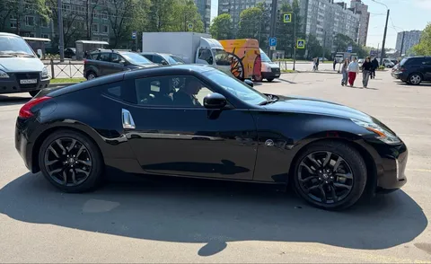

Когда я выставил Мышь в продажу, пытливый читатель мог догадаться, что на смену ей должно прийти что-то интересное. Не буду же я все лето на рэндже ездить. К тому же, я уже тизерил свои терзания в конце обзора на UMO 5. Не буду томить - все же Зетка. Nissan 370Z, на востоке известная как Fairlady Z (Z34), заняла достойное место на парковке и уже дарит мне удовольствие вёдрами.
Сама машина, надо сказать, вовсе не ведро. В том плане, что после постройки бэхи я решил сделать паузу в
При этом она полностью наследует дух старой школы. От 350Z она отличается мало (как, впрочем, и от новой 400Z - там вообще кости те же, только навесные элементы отличаются, так что при желании можно вовсе переодеть 370 под 400). Короткая база, задний привод, механика (must), небольшой вес, дерзкий нрав.
Машина довольно нервная, и мне это нравится. Мощности VQ37 в 336 л.с. ей вполне хватает, чтобы шлифовать до третьей посуху, ровная атмо-тяга доступна в широком диапазоне. Реакции быстрые и точные, моментальные отклики на газ, острая рулежка, четкий шифтер - что еще для счастья надо? Пожалуй, только масса подводит. Как минимум, потому что я подсознательно сравниваю зетку с MX-5, на которой я откатал прошлое лето и неохотно продал осенью. Мазда на треть легче, и это делает огромную разницу. На зетке нет-нет, да и чувствуешь, как она пытается свалить наружу поворота.
Но даже когда она расширяет траекторию, под газом она это делает достаточно деликатно и прогнозируемо - нет жесткого андерстира, да и волчком она не пытается пуститься. Стабилизация, к слову, настроена тоже игриво-адекватно - позволяет устроить небольшую шалость, но в какой-то момент все же возвращает тебя на путь истинный. Контролится машина легко и понятно. Сразу ясно, почему этот кузов так полюбили в дрифте от любительских серий до gp.
В обычной эксплуатации машина остается достаточно человечной. Не вытрясает душу, сидеть удобно, специальных навыков не требует (разве что кевларовая накладка диска сцепления требует особой деликатности, чтобы ехать плавно). Хотя на дальние поездки все равно тяжеловато - в городе механика утомляет, а на трассе очень шумно - изоляцию в нее положить забыли.
В завершение отмечу, что это один из самых красивых кузовов современности. Даже не спорьте. Однако, у моего экземпляра есть один недостаток - он черный. Но мы это исправим. Поэтому сейчас она уже в студии в разобранном состоянии. Но кроме очевидного, будет еще лютый кастом, требующий проектирования и нетривиальных работ по металлу. Сгораю от нетерпения.
